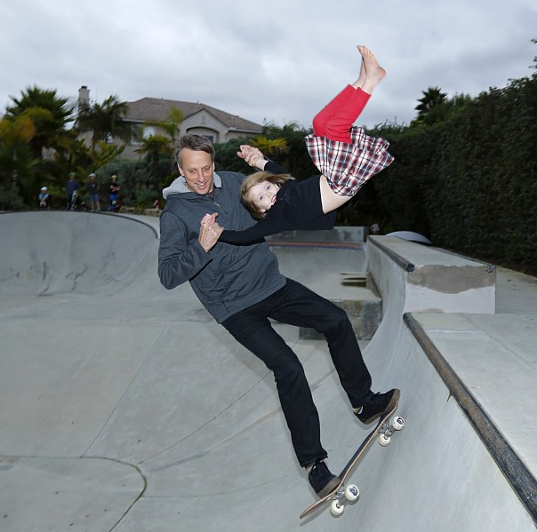
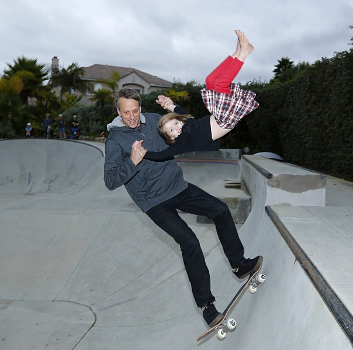
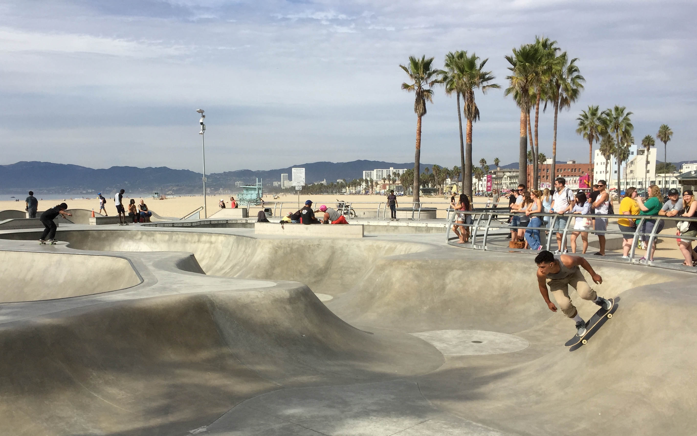

50-50 en Rampas de media park
Usuario: Tony Hawk
El otro dia pase por media park, ubicada en angamos con av. españa y tuve una sesion de rampas donde pude sacar 5050
Usuario: Tony Hawk
El otro dia pase por media park, ubicada en angamos con av. españa y tuve una sesion de rampas donde pude sacar 5050
Usuario: Rodney Mullen
El suelo de las canchas de basquet que estan ubicadas al lado del parque de skate estan buenisimas para hacer trucos de suelo
Foro